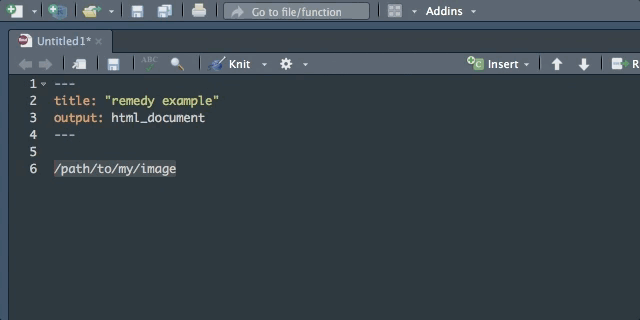

{remedy} provides addins to facilitate writing in markdown with RStudio.

All the functions are meant to be mapped to keyboard shortcuts. A list of suggested shortcuts is provided towards the end of this README.
Note that most of the addins/shortcuts below will also work without selecting any text.
Install
Once you’ve installed the package, you don’t need to load it with library(), the addins are installed on your machine as part of the package install process.
Using {remedy}
Write quicker in markdown with {remedy}!
Here’s a list of all available helpers:
You can also have an overview of how the functions behave with the remedy_example() function:


Chunk
Turn the selected text into a chunk.

Note that every chunk is given a name.
chunksplit split the chunk at a given spot.


Image
Turn the selected path into an image.
This element is context aware: if you select a text and a link, it turns the text into title between ![], and puts the link between ().
If the last element of the selection is not a link, you get an error message straight into you markdown document.



Recommended shortcuts (macOS)
Here’s a list of recommended shortcuts:
remedy::remedy_opts$get('hotkeys')
#> backtick bold chunk
#> "Ctrl+Cmd+`" "Ctrl+Cmd+B" "Ctrl+Alt+Cmd+C"
#> chunksplit chunkname footnote
#> "Ctrl+Shift+Alt+C" "Ctrl+Shift+Alt+N" "Ctrl+Cmd+Shift+6"
#> h1 h2 h3
#> "Ctrl+Cmd+1" "Ctrl+Cmd+2" "Ctrl+Cmd+3"
#> h4 h5 h6
#> "Ctrl+Cmd+4" "Ctrl+Cmd+5" "Ctrl+Cmd+6"
#> htmlcomment image italics
#> "Ctrl+Alt+C" "Ctrl+Cmd+P" "Ctrl+Cmd+I"
#> latex list right
#> "Ctrl+Cmd+L" "Ctrl+Shift+Cmd+=" "Alt+Cmd+Right"
#> strike table url
#> "Ctrl+Cmd+S" "Ctrl+Cmd+T" "Ctrl+Cmd+U"
#> xaringan youtube
#> "Ctrl+Cmd+X" "Ctrl+Cmd+Y"Managing Shortcuts
Use the {rsam} package to set and manage for you the hotkey settings of {remedy}.
If you want to edit the default settings you can view the defaults remedy_opts$get('hotkeys') and change them through remedy_opts$set(hotkeys=<NEW_SETTINGS>).
Feedback and enhancement
You’ve found a bug, or have an enhancement idea? Feel free to open an issue : https://github.com/ThinkR-open/remedy/issues.